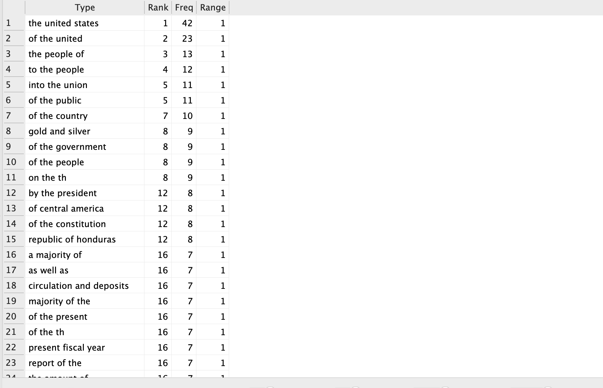
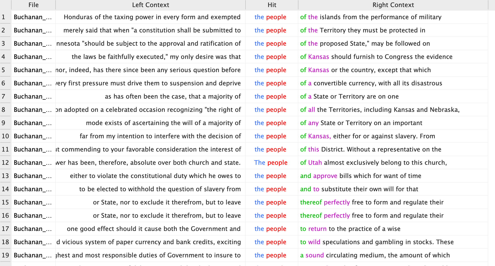
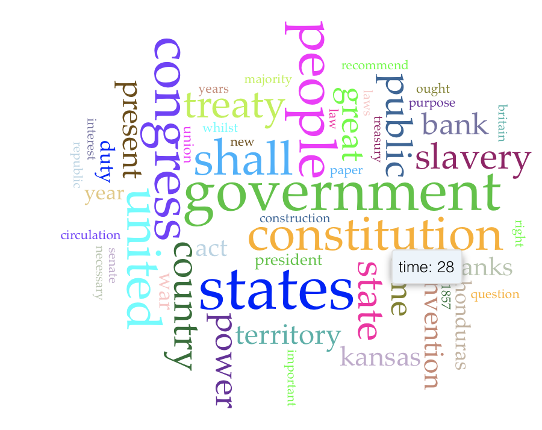
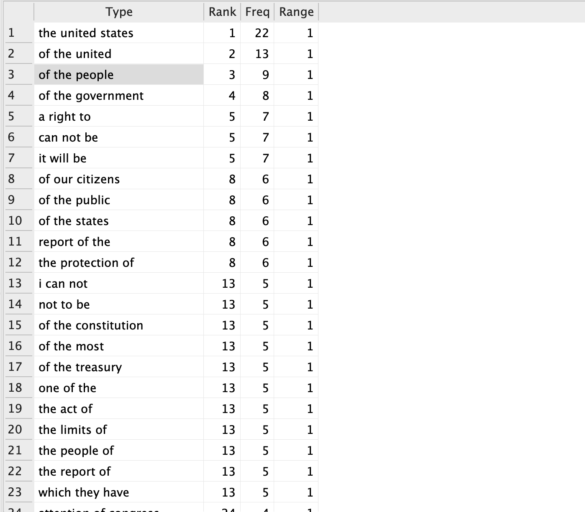
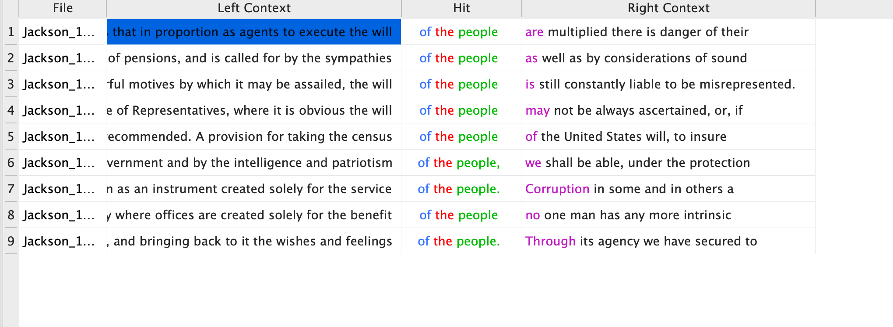
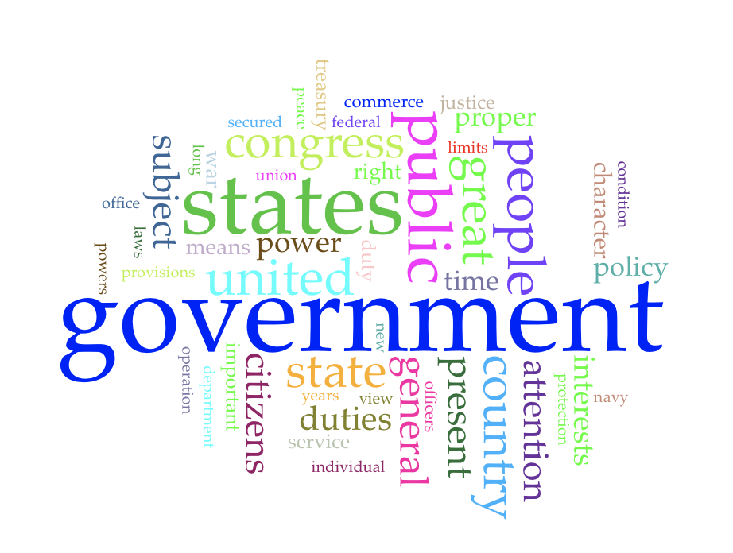

This page details a comparison of James Buchanans (1857) and Andrew Jacksons (1829) "State of the Union" adresses. This data was derived using AntConc and Voyant.
James Buchanan (1857)

N-Gram analysis of former president James Buchanans address, this shows his most frequently used phrases.

Key words in context veiw of Buchanans speech.

Voyant word cloud of Buchanans address, a graphical representation of the N-gram data.
Andrew Jackson (1829)

N-gram analysis of former president Andrew Jacksons address.

Key word in context view of Jacksons speech.

Voyant word cloud of Jacksons speech.